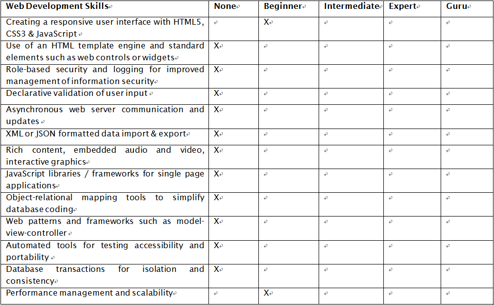
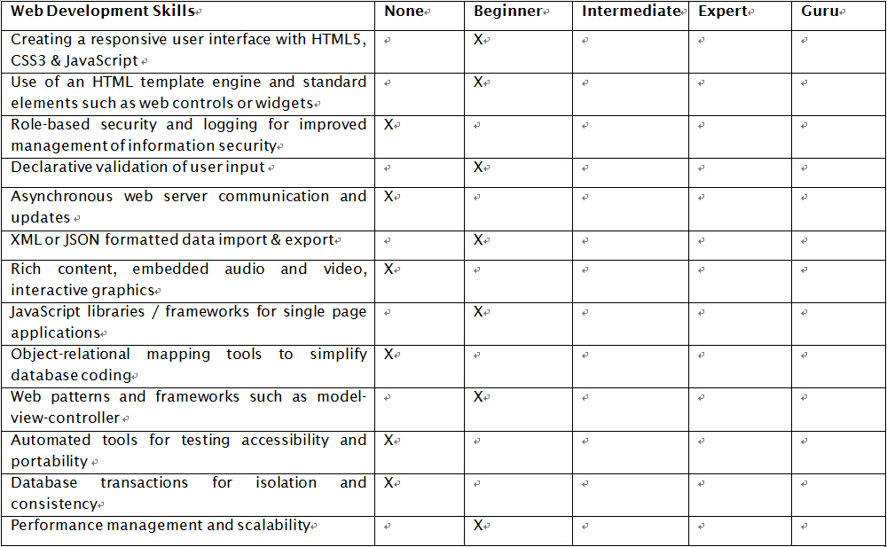
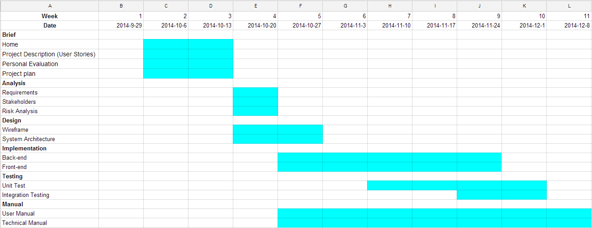

Hello!
This a brief page for Web Development Assignment
Prototype
This Web Application project will be on the sharing of easy cooking and delightful recipes. All the recipes that is posted in this website will be automatically shared or updated on social media website page that we created such as Facebook and Twitter. Interestingly, users will be able to view and give comments or feedbacks on our recipe posts at our web application and social media.
User Stories
-
A website admin should be able to post new recipes to the website everyday. That will automatically be posted to my websites social media pages ( such as Facebook and Twitter )
-
A user should be able to view all the recipes posted on the website front page.
-
A user should be to add comments or like the Recipes on the websites
-
The recipes should include status such as number of likes and comments received from different social networks about the recipe the admin posted.
Personal Evaluation
Shirlyn Ai Tee Lee
satl1g14

The table above examines the levels of my personal skills towards web development. Overall, it is evident that I am a freshie in web development. However, I am keen to acquire on declarative validation of user input and object relational mapping tools to simplify database coding. Apart from that, I will be responsible more on back-end coding implementation which will involved in the skills that I would like to study.
Personal Evaluation
Zhenfeng Wu
zfw2g10

The table above shows my web development skills where my skills are mostly in the level of 'None' and 'Beginner'. I would like to learn more about the web development and that is the reason I chose it! Maybe I am not a good programmer but I do like designing, especially on user interface. Therefore for this project I would like to improve the skill of 'Creating a responsive user interface with HTML5, CSS3 & JavaScript', which is the first option shown in the table.
Work Division
This project is developed by a team of two members. The project will be divided into two major parts which are the back-end and front-end concepts. Based on the discussion, we agreed to divide our responsibilities significantly into two main tasks.
In conclusion, Zhenfeng will be working more on front-end Graphical User Interface Design whereas Shirlyn will be working more on back-end coding implementation.
However, for further extend of our development on the project, we will coorperate and implicit our responsibilities without clear define line as the completion of the project is ambiguous.
Techniques & Resources
The following are the techniques & resources that we will be using according to our plan; more may be needed during the development:
- HTML5, CSS, Javascript, JQuery & AJAX
- Frameworks such as: Bootstrap & Blueimp Gallery
- Platforms: ASP.NET & SQL
- Other resources: Gantt Chart, GitHub, MVC pattern & Notepad++
Gantt Chart
